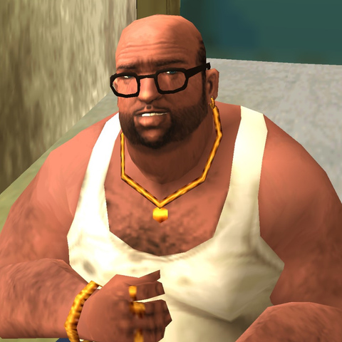
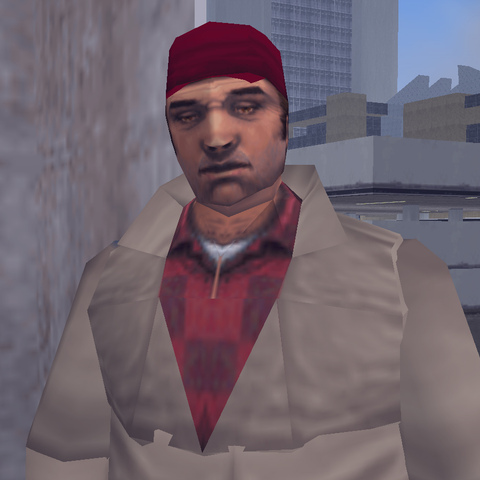
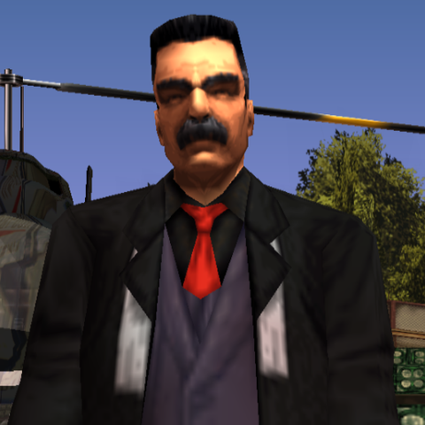
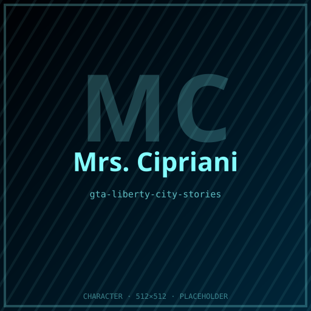
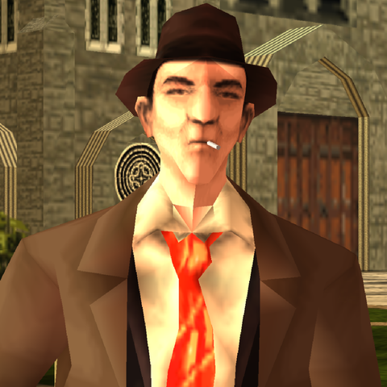
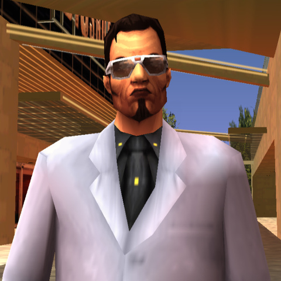
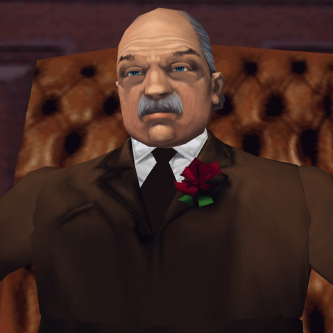
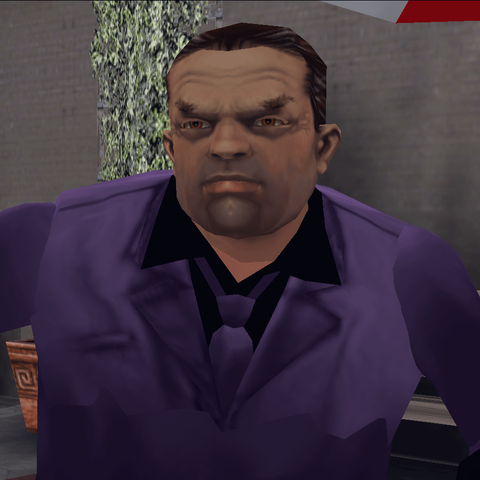
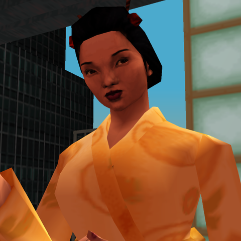
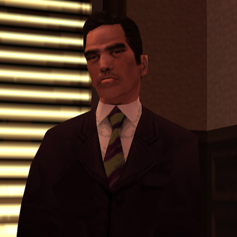

LCS
Characters
 8-Ball
8-Ball Donald Love
Donald Love- Franco Forelli

JD O'Toole Joey Leone
Joey Leone
Leon McAffrey Luigi Goterelli
Luigi Goterelli- Ma Cipriani
 Maria Latore
Maria Latore
Massimo Torini
Mrs. Cipriani
Ned Burner
Paulie Sindacco
Salvatore Leone
Toni Cipriani
Toshiko Kasen
Vincenzo Cilli
| Image | Name | Role | Affiliations | Status |
|---|---|---|---|---|
| 8-Ball | Explosives expert | Liberty City underworld | Alive |
| Donald Love | Media mogul | Love Media | Alive |
| Franco Forelli | Forelli boss | Forelli Crime Family | Deceased | |
| JD O'Toole | Pimp, informant | Leone Crime Family, Sindacco Family | Deceased | |
| Joey Leone | Leone capo | Leone Crime Family | Alive |
| Leon McAffrey | Corrupt cop | Liberty City Police Department | Alive | |
| Luigi Goterelli | Leone capo | Leone Crime Family | Alive |
| Ma Cipriani | Toni's mother | Cipriani family | Alive | |
| Maria Latore | Salvatore's girlfriend | Leone Crime Family | Alive |
| Massimo Torini | Antagonist, Sicilian don | Sicilian Mafia | Deceased | |
| Mrs. Cipriani | Mission giver | — | — | |
| Ned Burner | Mission giver | — | — | |
| Paulie Sindacco | Sindacco boss | Sindacco Family | Alive | |
| Salvatore Leone | Leone don | Leone Crime Family | Alive | |
| Toni Cipriani | Protagonist | Leone Crime Family | Alive | |
| Toshiko Kasen | Mission giver | — | — | |
| Vincenzo Cilli | Leone associate | Leone Crime Family | Deceased |